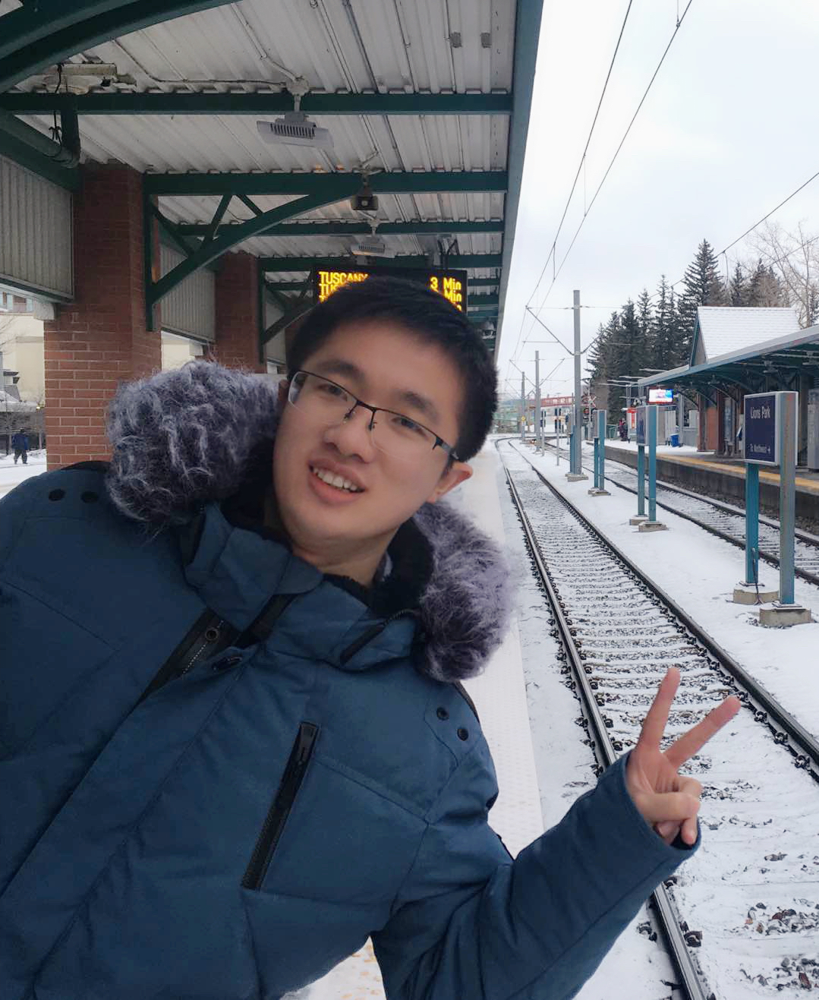
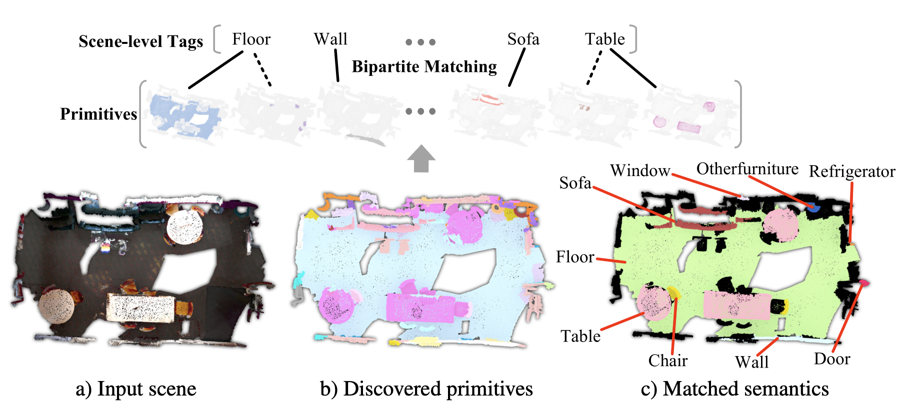
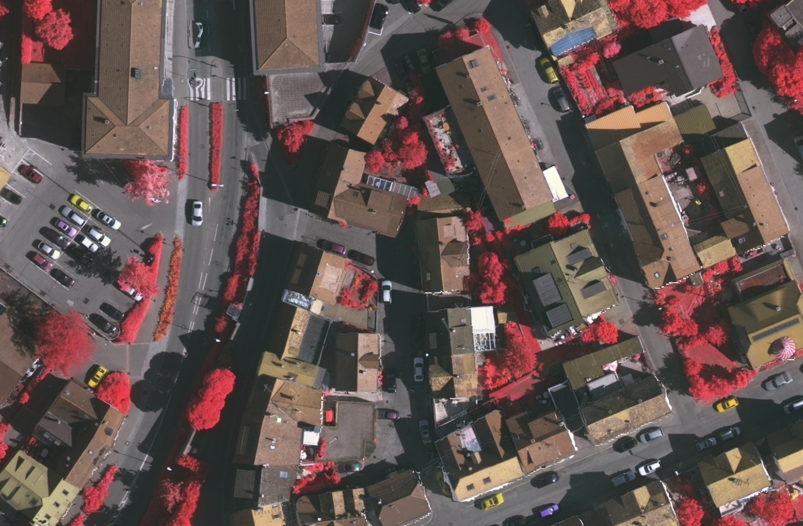

Weiwei SunApplied Scientist
Amazon Science, Vancouver, Canada.
|
 |


Biography
I am an Applied Scientist at Amazon and focus on 3D vision. I earned my Ph.D. in Computer Science, University of British Columbia (UBC), where I was co-advised by Dr. Kwang Moo Yi and Dr. Andrea Tagliasacchi. Prior to that, I completed a master's degree in Digital Imaging System at University of Calgary and a bachelor's degree in Geographic Information System (GIS) at Wuhan University.
I have been also very fortunate to receive advices during my Ph.D. studies/internships from Geoffrey Hinton, Eduard Trulls, Soroosh Yazdani, Sanja Fidler, Zan Gojcic, Jun Gao, Amin Banitalebi. They inspired me a lot on my research.
My research lies at the intersection of 3D computer vision and graphics, including areas such as visual geometry, 3D reconstruction, point clouds, neural rendering, and more. My goal is to equip machines with the ability to perceive, simulate, and interact with 3D environments by training deep models. I am particularly enthusiastic about solving real-world problems using these models.
News
- [2025-05]: Recognized as an outstanding reviewer for CVPR2025!
- [2025-02]: Our paper NoKSR: neural surface reconstruction accepted by 3DV'25.
- [2024-12]: Co-leading a demo of Makeup Virtual Try-on at Amazon booth in NeurIPS'24.
- [2024-12]: Our paper 3D Gaussian Splatting as MCMC presented as a Spotlight paper in NeurIPS 24.
- [2024-10]: Starting as an Applied Scientist at Amazon, Vancouver, Canada!
- [2024-09]: Ph.D. defended! Please check out my thesis at Exploring explicit models for geometric point cloud learning
- [2024-07]: Two papers (PointNeRF++ and Lagrangian Hashing) on Point-based Neural Rendering got accepted by ECCV 2024.
- [2024-06]: I'm co-organizing Image Matching Workshop in CVPR2024 at Seattle, US!
- [2024-06]: Starting Applied Science Internship at Amazon, Seattle where I will work on Virtual Try On (VTO).
Selected Publications [Google Scholar]
* below indicates equal contribution; Representative works are highlighted.

Experience
-
Amazon SeattleMay. 2024 – Aug. 2024
Applied Scientist Intern
Topic: 3D Virtual Try On
-
NVIDIA Toronto AI Lab TorontoApr. 2022 – Mar. 2023
Research Scientist Intern
Topic: Single-view reconstruction, 3D generative model
-
Google RemoteJun. 2021 – Dec. 2021
Student Researcher
Topic: Geometric perception
-
VIP Lab, University of Waterloo, Waterloo, CanadaMay. 2019 – Dec. 2019
Visiting Ph.D. Student
Topic: Point clouds registration
-
Perceptron Algorithm Group, Zongmu Technology Co. Ltd, Beijing, ChinaMay. 2018 – Aug. 2018
Computer Vision Research Intern
Topic: Image segmentation
-
School of optometry, University of Waterloo, Waterloo, CanadaMay. 2015 – Aug. 2015
Image Processing Research Intern
Topic: Digitial image processing
Professional Activities
- Conference Reviewer:
SIGGRAPH 2023.
International Conference on Learning Representations (ICLR) 2023.
International Conference on 3D Vision (3DV) 2022.
Neural Information Processing Systems (NeurIPS) 2022.
IEEE Conference on Computer Vision and Pattern Recognition (CVPR) 2022.
International Conference on Machine Learning (ICML) 2022.
International Conference on Learning Representations (ICLR) 2022.
Neural Information Processing Systems (NeurIPS) 2021.
IEEE International Conference on Computer Vision (ICCV) 2021.
International Conference on Machine Learning (ICML) 2021.
IEEE Conference on Computer Vision and Pattern Recognition (CVPR) 2021.
AAAI Conference on Artificial Intelligence (AAAI) 2021.
Winter Conference on Applications of Computer Vision (WACV) 2021.
Neural Information Processing Systems (NeurIPS) 2020.
Asian Conference on Computer Vision (ACCV) 2020.
British Machine Vision Conference (BMVC) 2020.
International Joint Conference on Artificial Intelligence (IJCAI) 2020.
European Conference on Computer Vision (ECCV) 2020.
IEEE Conference on Computer Vision and Pattern Recognition (CVPR) 2020.
AAAI Conference on Artificial Intelligence (AAAI) 2020.
British Machine Vision Conference (BMVC) 2019.
IEEE International Conference on Computer Vision (ICCV) 2019: Geometry Meets Deep Learning.
IEEE International Conference on Computer Vision (ICCV) 2019.
IEEE Conference on Computer Vision and Pattern Recognition (CVPR) 2019: Image Matching.
- Journal Reviewer:
International Journal of Computer Vision
IEEE Transactions on Pattern Analysis and Machine Intelligence
Land Use Policy
IEEE Transactions on Neural Networks and Learning Systems
IEEE Transactions on Visualization and Computer Graphics
Computer Vision and Image Understanding
Selected Honors & Awards
-
CVPR Outstanding Reviewer2021, 2023
-
Mitacs Globalink Graduate Fellowship2016
-
Outstanding Graduate, WHU2016
-
Mitacs Globalink Summer Internship Award2015
-
National Motivational Scholarship, Ministry of Education of P.R. China2013, 2014